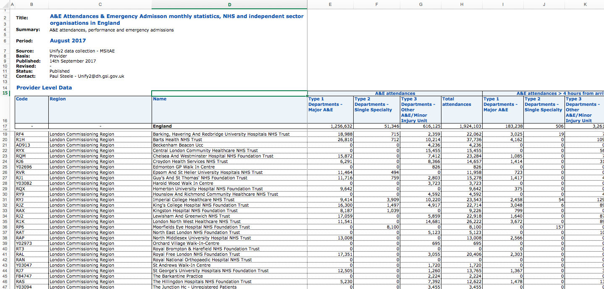

Telling stories with data
John Walton & Chris Jeavans
Data journalists | BBC News
What is data journalism?
- Hunches about stories
- Seeking out those story ideas in data
- Telling those stories to the public
Many different types of datasets
- Open data: Government departments, Office for National Statistics, NHS Digital, Eurostat, United Nations, World Health Organisation etc
- Exclusive data: Freedom of Information requests, leaks, contacts, web scraping
- Creating your own datasets: Surveys, polls & other research
A project using open data
A project using exclusive data
A project using data we collected
How do we find stories in the data?
- Do you already know the questions you want to answer?
- If so, dive into the data (with an open mind)
- But you can also just start probing
- Look for anything unexpected
- Examine the outliers
- Check with experts
But first, we need to clean the data
Data analysis
- In its simplest form, this will invove some basic summing, ranking, finding averages, looking at change over time
- Using statistical models and techniques to analyse data
- Analysing very large datasets - millions of observations
Grouping and ranking
Statistical modelling
var properties = ['weight', 'height'];
var sum = function (values) {
return _.reduce(values, function (a, b) { return a + b;});
};
var getSquaredDifference = function (a, b) {
return Math.pow(a - b, 2);
};
var getDateDifference = function(a, b) {
return Math.abs(new Date(a) - new Date(b));
};
var setDissimilarityDistance = function (athletes, user) {
_.each(athletes, function (athlete) {
var distance;
var squareDifferences = [];
_.each(properties, function (prop) {
squareDifferences.push(getSquaredDifference(athlete[prop], user[prop]));
});
athlete['distance'] = sum(squareDifferences);
athlete['birthDifference'] = getDateDifference(athlete.dob, user.dob);
});
return athletes;
};
var getBodyMatches = function (athletes, user) {
var dataWithDistances = setDissimilarityDistance(athletes, user);
var athleteMatches = _.sortBy(_.sortBy(dataWithDistances, 'birthDifference'), 'distance');
return athletesMatches.slice(0,3);
};
Thankfully, it worked...


Working with large datasets
A detailed look at house prices
- Started off with more than 22 million rows of all property transactions in England and Wales
- Analysed 8.5 million property transactions over a 10-year period
- Carried out inflation-adjustment to find how house prices had changed at very detailed geographical levels
- Reproducible data analysis was key
- Added benefit is that the analysis can be re-run quickly when the data is updated
And smaller projects
What tools do we use to clean and analyse data?
- Excel
- Open Refine
- R - look at Swirl or YaRrr: The Pirate's guide to R
- Python
- Tabula: extract data tables from PDFs
- QGIS